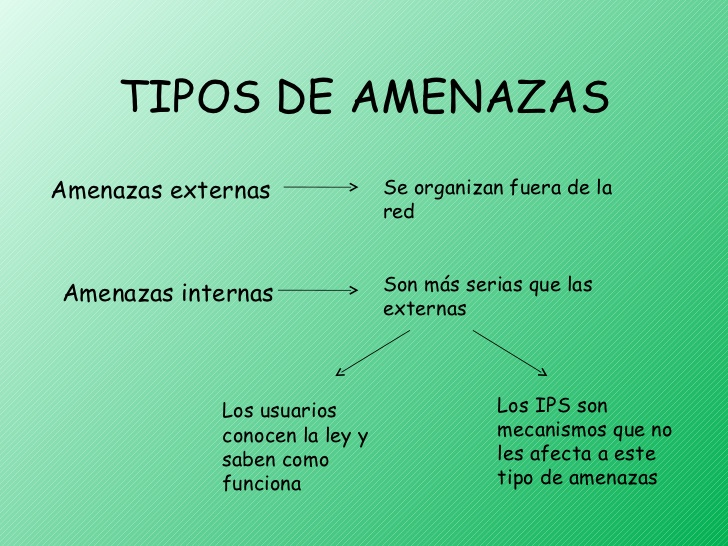

OBJETIVOS.
La Seguridad Informática Debe Establecer Normas Que Minimicen Los Riesgos A La Información O Infraestructura Informática. Estas Normas Incluyen Horarios De Funcionamiento, Restricciones A Ciertos Lugares, Autorizaciones, Denegaciones, Perfiles De Usuario, Planes De Emergencia, Protocolos Y Todo Lo Necesario Que Permita Un Buen Nivel De Seguridad Informática Minimizando El Impacto En El Desempeño De Los Trabajadores Y De La Organización En General Y Como Principal Contribuyente Al Uso De Programas Realizados Por Programadores.
•La Infraestructura Computacional: Es Una Parte Fundamental Para El Almacenamiento Y Gestión De La Información, Así Como Para El Funcionamiento Mismo De La Organización. La Función De La Seguridad Informática En Esta Área Es Velar Por Que Los Equipos Funcionen Adecuadamente Y Anticiparse En Caso De Fallos, Robos, Incendios, Sabotajes, Desastres Naturales, Fallos En El Suministro Eléctrico Y Cualquier Otro Factor Que Atente Contra La Infraestructura Informática.
•Los Usuarios: Son Las Personas Que Utilizan La Estructura Tecnológica, Zona De Comunicaciones Y Que Gestionan La Información. Debe Protegerse El Sistema En General Para Que El Uso Por Parte De Ellos No Pueda Poner En Entredicho La Seguridad De La Información Y Tampoco Que La Información Que Manejan O Almacenan Sea Vulnerable.

AMENAZA.
No sólo las amenazas que surgen de la programación y el funcionamiento de un dispositivo de almacenamiento, transmisión o proceso deben ser consideradas, también hay otras circunstancias no informáticas que deben ser tomadas en cuenta. Muchas son a menudo imprevisibles o inevitables, de modo que las únicas protecciones posibles son las redundancias y la descentralización, por ejemplo mediante determinadas estructuras de redes en el caso de las comunicaciones o servidores en clúster para la disponibilidad.
LAS AMENAZAS PUEDEN SER CAUSADAS.
Usuarios: causa del mayor problema ligado a la seguridad de un sistema informático. En algunos casos sus acciones causan problemas de seguridad, si bien en la mayoría de los casos es porque tienen permisos sobredimensionados, no se les han restringido acciones innecesarias, etc.
Programas maliciosos: programas destinados a perjudicar o a hacer un uso ilícito de los recursos del sistema. Es instalado en el ordenador, abriendo una puerta a intrusos o bien modificando los datos. Estos programas pueden ser un virus informático, un gusano informático, un troyano, una bomba lógica, un programa espía o spyware, en general conocidos como malware.
AMENAZAS POR EL ORIGEN.
El hecho de conectar una red a un entorno externo nos da la posibilidad de que algún atacante pueda entrar en ella y hurtar información o alterar el funcionamiento de la red. Sin embargo el hecho de que la red no esté conectada a un entorno externo, como Internet, no nos garantiza la seguridad de la misma. De acuerdo con el Computer Security Institute (CSI) de San Francisco, aproximadamente entre el 60 y 80 por ciento de los incidentes de red son causados desde dentro de la misma. Basado en el origen del ataque podemos decir que existen dos tipos de amenazas.
AMENAZAS EXTERNAS
Son aquellas amenazas que se originan fuera de la red. Al no tener información certera de la red, un atacante tiene que realizar ciertos pasos para poder conocer qué es lo que hay en ella y buscar la manera de atacarla. La ventaja que se tiene en este caso es que el administrador de la red puede prevenir una buena parte de los ataques externos.
Amenazas Internas: Generalmente Estas Amenazas Pueden Ser Más Serias Que Las Externas, Por Varias Razones Como
•Si Es Por Usuarios O Personal Técnico, Conocen La Red Y Saben Cómo Es Su Funcionamiento, Ubicación De La Información, Datos De Interés, Etc. Además, Tienen Algún Nivel De Acceso A La Red Por Las Mismas Necesidades De Su Trabajo, Lo Que Les Permite Mínimos Movimientos.
•los Sistemas De Prevención De Intrusos O IPS, Y Firewalls Son Mecanismos No Efectivos En Amenazas Internas Por No Estar, Habitualmente, Orientados Al Tráfico Interno. Que El Ataque Sea Interno No Tiene Que Ser Exclusivamente Por Personas Ajenas A La Red, Podría Ser Por Vulnerabilidades Que Permiten Acceder A La Red Directamente: Rosetas Accesibles, Redes Inalámbricas Desprotegidas, Equipos Sin Vigilancia, Etc.

AMENAZAS POR EL EFECTO
El tipo de amenazas según el efecto que causan a quien recibe los ataques podría clasificarse en:
•Robo de información.
•Destrucción de información.
•Anulación del funcionamiento de los sistemas o efectos que tiendan a ello.
•Suplantación de la identidad, publicidad de datos personales o confidenciales, cambio de información, venta de datos personales, etc.
•Robo de dinero, estafas.
AMENAZA INFORMÁTICA DEL FUTURO
Si en un momento el objetivo de los ataques fue cambiar las plataformas tecnológicas ahora las tendencias cibercriminales indican que la nueva modalidad es manipular los certificados que contienen la información digital. El área semántica, era reservada para los humanos, se convirtió ahora en el núcleo de los ataques debido a la evolución de la Web 2.0 y las redes sociales, factores que llevaron al nacimiento de la generación 3.0.

•Se puede afirmar que “la Web 3.0 otorga contenidos y significados de manera tal que pueden ser comprendidos por las computadoras, las cuales -por medio de técnicas de inteligencia artificial- son capaces de emular y mejorar la obtención de conocimiento, hasta el momento reservada a las personas.
•Es decir, se trata de dotar de significado a las páginas Web, y de ahí el nombre de Web semántica o Sociedad del Conocimiento, como evolución de la ya pasada Sociedad de la Información.